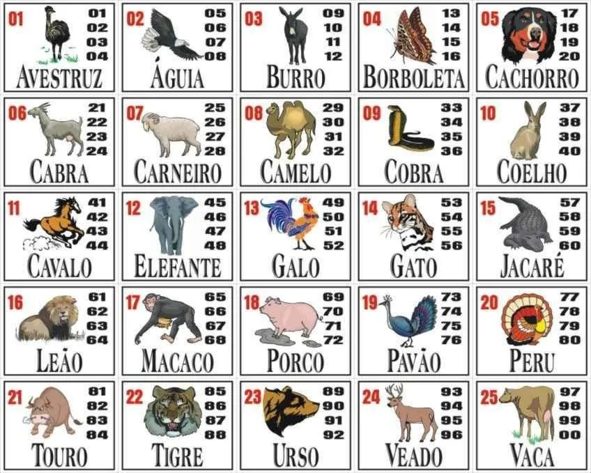

O JOGO DO BIXO
O JOGO DO BIXO
O que é o jogo do bicho
Primeira mente entenda que o jogo do Bicho é uma pratica milenar criada por Eduardo Taborda e Keinan enquanto cursavam a Escola Xavier para jovens super dotados, eles pegaram e juntaram suas mentes e construiram um jogo milenar que usava tudo oque eles mais amavam dados, magia negra, mães e Cezio 137; após criarem esse jogo ambos desapareceram misteriosamente na rua Honduras 422Como jogar?
Após saber do que se trata e de seus riscos de invocar o fantasma de Rubira você aqui vai aprender a jogar e dominar esse game milenar, primeiramente você vai precisar de 10 velas bicolores(preta e vermelha) cada uma de 10 metros de autura, 2 dados de 6 lados, uma fita casete com a musica Bring me to life da banda Evanescence, um papel e caneta e por fim um vó virgem; após conseguir todos os itens monte uma tabela 5X5 no papel, seguindo a imagem guia você pegara e botara em cada quadrante o nome de uma animal, agora pegue as velas e crie um circulo que envolva você a tabela e os dados, nisso você ordenara que a Vó virgem coloque a musica para tocar e por fim as luzes se apagaram e você entrara em coma por 5 milisegundos, fique tranquilo isso apenas indica que tudo está certo e que você não é um impostor, agora finalmente você pode escolher um animal e jogar os dados, se cair no animal que você havia escolhido, parabens você ganhou, se não você perdeu :(; e com essa derrpta você será obrigado a jogar quarenta horas diretas de Concord